本项目围绕 NVIDIA 开源的 Kimodo-SOMA-RP-v1.1 展开，目标是在原始商业训练数据和官方后训练代码均未开放的条件下，自主探索一套可复现的后训练方法，使模型更擅长生成游戏场景中的攻击、跳跃、浮空、击倒等动作，同时尽可能保留模型原有的通用动作生成能力。
整个项目分为两个阶段。Phase 1 使用开源 SEED 数据的细分子集，重点验证 Kimodo 后训练链路是否可行，并分析学习率、训练步数和动作子集对微调效果的影响。Phase 2 将方法迁移到游戏动作数据，完成原始数据转换、自动 Prompt 生成、失败实验分析、人工标注平台建设、高质量 Gold 数据训练、自定义评测体系以及 Blender 插件原型。
项目最终完成了从数据制备、Prompt 标注、模型训练、Checkpoint 推理到定量评测和 Blender 可视化的完整原型闭环，也获得了一个明确的阶段性结论：高质量游戏动作数据能够使 Kimodo 学会目标领域动作，但当前基于小规模 Gold 数据的全参数微调会造成明显的原始能力下降。因此，“模型能不能学会游戏动作”已经得到验证，而“如何在增强游戏动作能力的同时保持通用能力”仍是下一阶段需要重点解决的问题。
本项目主要服务于游戏动作制作人员和动作生成算法研发人员。
在传统游戏动作生产过程中，一个动作通常需要经过需求设计、动作采集或关键帧制作、骨架绑定、动作清理和引擎验证等多个环节。对于攻击、受击、跳跃、浮空、倒地等高频动作，如果能够通过文本快速生成动作原型，就可以降低动作方案试错成本，并帮助动作设计人员更快完成前期创意验证。
例如，当用户输入：
角色从自然站姿开始，双膝弯曲并下沉蓄力，随后双脚蹬地向上跃起，身体在空中短暂停留，最后双脚落地并恢复站立。
模型不应只生成一个模糊的抬腿动作，而应正确表达“站立—蓄力—离地—空中停留—落地”的完整时序，以及身体重心和根节点高度的变化。
Kimodo-SOMA-RP-v1.1 已具备较好的通用文本到动作生成能力，但它主要基于未公开的约 700 小时 Bones-RigPlay 商业光捕数据训练。其开源内容包括模型权重、技术报告和部分推理代码，但没有开放完整的后训练代码和商业训练数据。因此，我们无法直接复用官方训练流程，只能根据开源代码和技术报告自行恢复数据格式、训练目标、微调方法与评测方式。
游戏动作与一般人体动作还存在明显的领域差异。游戏动作往往具有更大的动作幅度、更明显的根节点位移、更夸张的受击反馈，以及连续三个以上动作阶段的切换。直接使用原始模型时，这些动作表达不足；直接使用游戏数据全参数微调，又可能破坏模型原有的动作生成能力。
因此，本项目需要回答的核心问题是：
在缺少官方后训练代码的情况下，能否建立一套可复现的 Kimodo 后训练管线，使模型的游戏动作生成能力得到增强，并客观评估这种增强是否以牺牲原始能力为代价？
项目开始时，我们将工作划分为两个阶段：
| 阶段 | 主要任务 | 验收关注点 |
|---|---|---|
| Phase 1 | 基于开源 SEED 子集验证训练管线，探索学习率、训练步数和动作子集的影响 | 后训练链路可运行、可复现；目标子集效果有真实评测；能够分析对原始能力的影响 |
| Phase 2 | 将训练方法迁移到游戏动作域，完成数据转换、Prompt 标注、模型训练和自定义评测 | 模型能够学习游戏动作；结果可量化、可演示；失败原因和适用边界清楚 |
| 工程交付 | 整理数据、代码、模型、评测脚本、运行说明和演示工具 | 核心链路没有明显缺口，其他成员可以按照说明复现和使用 |
项目约定的核心产出包括：
可复现的训练报告和训练管线，包括数据制备脚本、训练代码、超参数、TMR 评测方法和实验结论；
制备完成的训练数据集；
训练完成的模型权重；
能够直观展示生成结果的 Blender 插件原型；
对有效方案、失败路线和下一阶段技术方向的明确判断。
本项目是探索型课题。验收标准不是要求所有实验都必须得到正向结果，而是要求过程可复现、结论有证据，并能够帮助后续业务判断哪些路线值得继续、哪些路线不应再盲目投入。
在使用内部游戏动作数据前，我们首先使用开源数据进行方法验证，这一安排是为了将风险前置。
如果直接使用游戏数据训练，一旦结果不理想，很难判断问题来自数据转换、骨架映射、Prompt 标签、训练实现还是模型本身。Phase 1 使用已知格式的开源数据，主要验证三个问题：
Kimodo-SOMA-RP-v1.1 的开源权重能否继续训练；
不同学习率和训练步数是否会带来可观测的能力变化；
目标子集能力变化时，SEED 整体语义能力和动作物理质量是否保持。
这一阶段我们打通了完整链路：
开源动作数据 → Kimodo 特征制备 → Feature Cache → Domain Finetune → Checkpoint → Text-to-Motion 推理 → TMR 与动作质量评测
在数据选择上，我们分别探索了 Dancing、Object Manipulation、G+C 等细分动作子集，并测试不同学习率与训练步数的组合。
Phase 1 证明了开源权重可以作为领域后训练的起点，但不同配置下的效果并不稳定，也不是训练步数越多越好。
以学习率 1e-7、训练 3,000 steps 的一组代表性 repetition 结果为例：
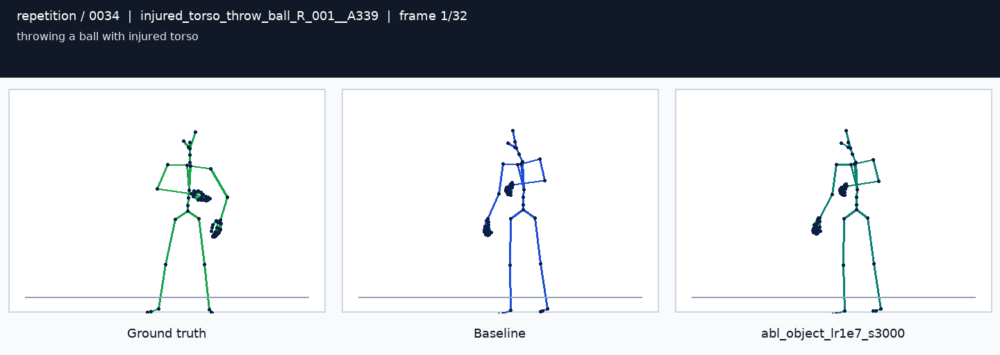
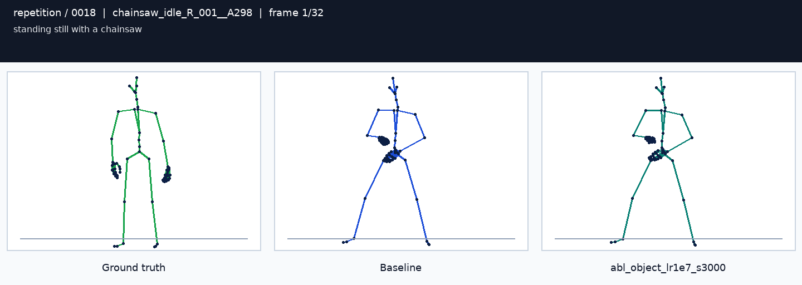
| 指标 | 原始模型 | 微调模型 | 变化 |
|---|---|---|---|
| T2M R@1 | 78.720% | 79.150% | +0.430 |
| T2M R@2 | 80.430% | 85.530% | +5.100 |
| T2M R@3 | 90.210% | 91.910% | +1.700 |
| T2M R@5 | 93.190% | 96.600% | +3.410 |
| Foot Skate Ratio | 0.036120 | 0.042050 | -0.00593 |
| Height | 0.077078 | 0.086261 | -0.005532 |
从语义检索指标看，R@1 至 R@5 多数得到提升，其中 R@2 提升了 5.1 个百分点。这说明小学习率微调确实能够改变模型对目标动作子集的建模能力。
但是，如果只展示语义指标，会得到过于乐观的结论。与此同时，Foot Skate Ratio 从 0.036120 上升至 0.042050，Height 也发生偏移，表明动作足底稳定性和高度分布出现了副作用。
在 Object Manipulation 的 3,000-step 保持评估中，R@1 仅提高 0.120 个百分点，R@2 下降 0.700 个百分点，FID Gen-GT 增加 0.000222，Foot Skate Ratio 增加 0.011467。不同子集和不同 repetition 的结果也存在波动，Dancing、G+C 等子集上的收益不够稳定。
Phase 1 得到了四点关键认识。
第一，Kimodo 后训练在工程上是可行的。 我们成功完成数据制备、特征缓存、模型训练、Checkpoint 加载和评测，证明开源权重可以作为后续领域微调的基础。
第二，Object Manipulation 是现有子集中更接近目标领域增强预期的验证对象，但其收益仍然有限。 因此不能只根据一次目标子集实验就宣称模型整体能力得到提升。
第三，语义匹配指标与动作物理质量可能出现相反变化。 R@K 提升并不意味着 foot-skate、根节点高度或动作自然度一定改善。模型选择必须联合语义、动作质量和保持指标，不能只看训练 loss 或某一个 TMR 指标。
第四，学习率、训练步数和数据子集之间存在耦合。 增加 steps 并不保证持续改善，超参数不能从单次实验中直接确定。
因此，Phase 1 的准确结论不是“已经实现目标能力提升且整体能力不掉”，而是：后训练链路已经得到验证，小学习率对部分目标能力有效，但整体能力保持需要通过 SEED 全集和动作质量指标单独评估。
这些结论直接影响了 Phase 2 的设计：在游戏动作域中，除了训练 loss 和文本匹配，还必须增加动作位移、关键身体部位、未见 Prompt 泛化和 SEED 原始能力保持评测。
Phase 2 的第一项工作不是训练模型，而是将游戏动画资产转换为 Kimodo 可以读取和训练的数据。
原始数据处理过程如下：
21,529 条原始动作 → 约 9,000 条单人动作 → 7,951 条 keep_human 样本 → 骨架重定向与中性手腕修复 → 统一为 30 fps → 提取 90×369 Kimodo 特征 → 划分训练集和验证集
最终，7,951 条初筛样本被划分为 6,532 条训练数据和 1,419 条验证数据。
这一过程需要解决以下问题：
原始骨架与 SOMA 骨架定义不一致；
不同动画的长度、帧率和坐标系不统一；
手腕中立姿态和骨架重定向可能引入偏差；
多人动作、异常骨架、无效文件和转换失败样本需要过滤；
原始动作名称通常不能直接作为准确的文本监督。
我们最终完成了从原始动画到 Kimodo 每帧 369 维动作特征的转换，并形成可重复执行的数据筛选、骨架重定向、特征提取和划分脚本。这个成果使后续训练失败能够被定位到训练或标签环节，而不需要每次从原始资产重新处理。
完成 7,951 条初筛数据转换后，我们首先采用 batch=8、3,000 steps 进行小批次训练，希望以较低成本观察模型是否能够快速适应游戏动作域。
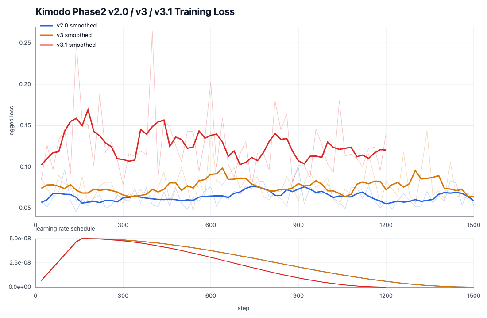
实验中训练 loss 能够下降，模型权重也可以正常推理，但动作可视化没有达到预期。攻击、跳跃、浮空等目标动作并未得到稳定增强，尤其是需要明显根节点高度变化的动作，模型仍倾向于保持站立姿态。
随后，我们按照扩散模型的常见形式进行加噪，并使用 MSE 作为重建目标。该实验在数值上同样能够收敛，但可视化效果仍不理想。
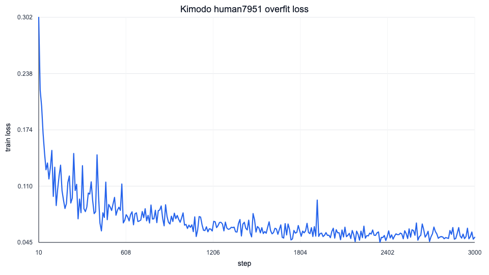
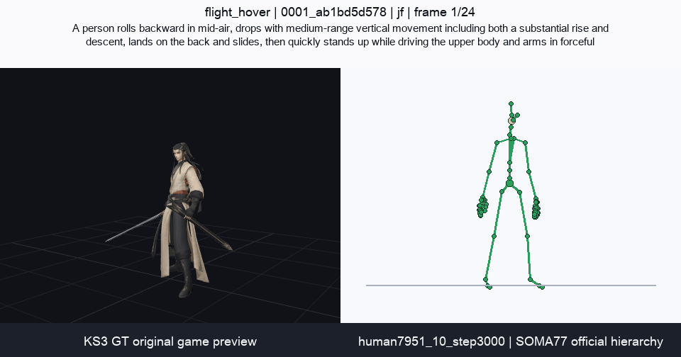
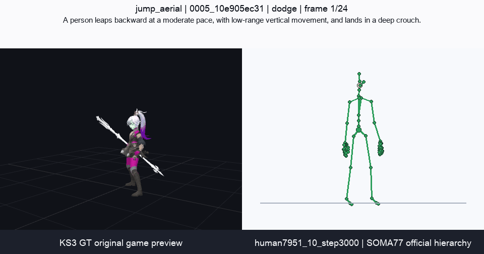
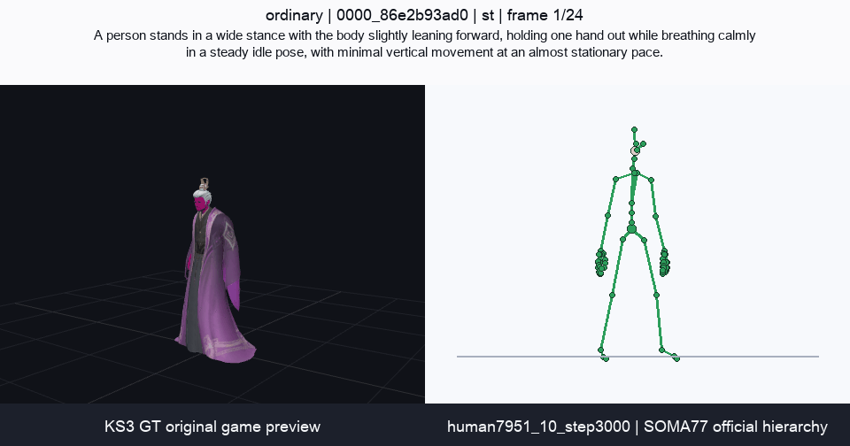
**最后，**不做 normalized 会导致动作的位置、朝向、骨架尺度和各特征数值范围不统一，与 RP 预训练模型的数据分布及扩散噪声尺度不匹配。模型会浪费能力学习这些无关差异，structured loss 各项也会失衡。模型训练效果会有很大差异。
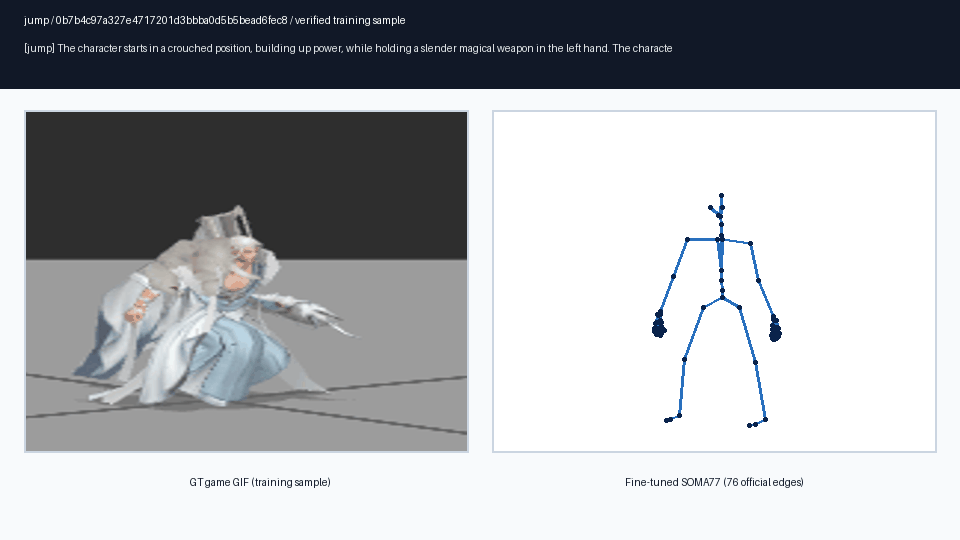
三次失败实验出现了一个高度一致的现象：
无论如何调整，角色的脚都像“钉在地板上”。即使 Prompt 表达跳跃、浮空或从地面进入空中，模型仍然倾向于保留站立和足底接触先验。
这两个失败让我们认识到：
loss 下降只能说明特征距离在缩小，不能证明模型已经学会离地、浮空和落地；
单纯增加训练步数无法自动解决问题；
MSE 不一定能够充分表达 Kimodo 动作表征中的结构和时序要求；
问题不能继续只从 batch size、学习率或优化器角度排查。
这些失败并非无效工作。它们阻止我们继续在相同路线中盲目扩大训练规模，并促使我们重新检查原始训练目标和数据监督质量。
在简单 MSE 训练没有解决“脚钉地”和强动态动作学习不足的问题后，我们进一步按照 Kimodo 的训练方式，对原始游戏数据进行全量训练，并将损失函数替换为 Structured Motion Loss。
模型以加噪动作xt及文本、初始朝向和运动学约束C为输入，预测对应的干净动作x̂0。其中，约束特征通过掩码直接写入输入动作，使模型在生成自然运动的同时满足指定的姿态或轨迹控制。
训练总损失为各分量重建损失和前向运动学一致性损失的加权和：
$\begin{matrix}L=&{{\lambda }_{1}},\rho ({{\hat{{{r}_{0}^{p}}-r}}_{0}^{p}})+{{\lambda }_{2}},\rho ({{\hat{{{r}_{0}^{a}}-r}}_{0}^{a}})&+{{\lambda }_{3}},\rho ({{\hat{{{j}_{0}^{p}}-j}}_{0}^{p}})+{{\lambda }_{4}},\rho ({{\hat{{{j}_{0}^{v}}-j}}_{0}^{v}})&+{{\lambda }_{5}},\rho ({{\hat{{{j}_{0}^{a}}-j}}_{0}^{a}})+{{\lambda }_{6}},\rho (\hat{{{f}_{0}}-{{f}_{0}}})&+{{\lambda }_{7}},\rho !\left ({FK(\hat{{{j}_{0}^{a}}})-{{j}_{0}^{p}}}\right ).\end{matrix}$
其中ρ(⋅)为 Smooth L1（Huber）损失；变长序列训练时，所有逐帧损失仅在有效帧掩码 (M) 内计算：
${{\rho }_{M}}(e)=\frac{\sum_{n,t}{{{M}_{n,t}}},\rho ({{e}_{n,t}})}{\sum_{n,t}{{{M}_{n,t}}}+\varepsilon }.$
各项含义如下：
Lroot − pos：约束角色整体在场景中的平移轨迹；
Lroot − heading：约束行进或朝向方向；
Ljoint − pos：保持人体各部位空间姿态；
Ljoint − vel：提升相邻帧之间的时序连续性，缓解抖动；
Ljoint − rot：保证关节旋转姿态正确；
Lcontact：学习足部接触状态，为后续脚锁定和减少滑步提供依据；
LFK：将预测旋转经正向运动学恢复为关节位置，并与真实位置对齐，保证旋转和骨骼结构的一致性。
论文中的权重为：
(λ1, λ2, λ3, λ4, λ5, λ6, λ7) = (10, 2, 10, 3, 10, 4, 5).
在此基础上，进一步按照 Kimodo 的训练方式分别完成 Stage 1 和 Stage 2。
Stage 1 只使用文本 Prompt 作为条件，根据游戏动作数据训练完整的 Text-to-Motion 生成能力。
这一阶段主要观察两个问题：
Structured Motion Loss 能否改善前期 Root 位移不足、动作幅度偏小的问题；
模型能否根据现有自动生成 Prompt，学到对应的游戏动作。
训练可以正常收敛，部分动作相比前面的 MSE 实验已经有明显改善，但实际检查生成结果后发现，不同样本之间差异很大。
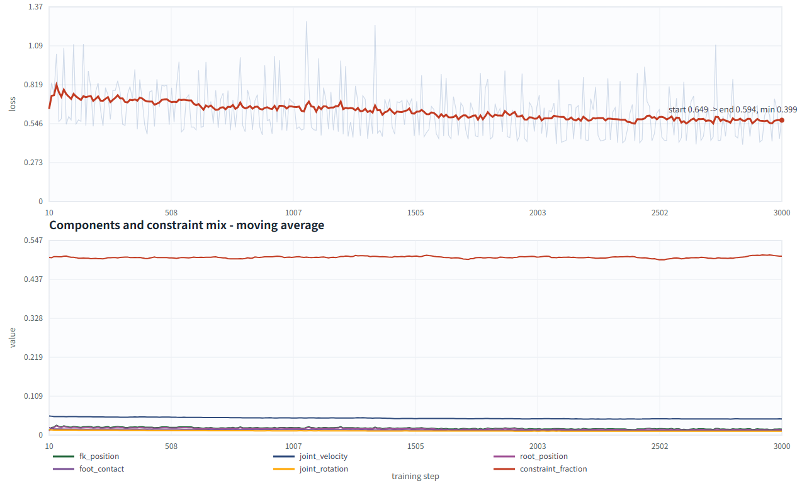
部分失败并不是模型完全没有学习，而是训练 Prompt 本身与 Motion 存在明显偏差。例如动作方向、动作顺序、左右肢体或者起止状态描述不准确，导致模型实际接收到的是错误的文本监督。
[💡]
一个人以平静的待机姿势站立，左手向下伸展，上半身保持静止，整体只有极轻微的上下移动，动作节奏几乎处于静止状态。
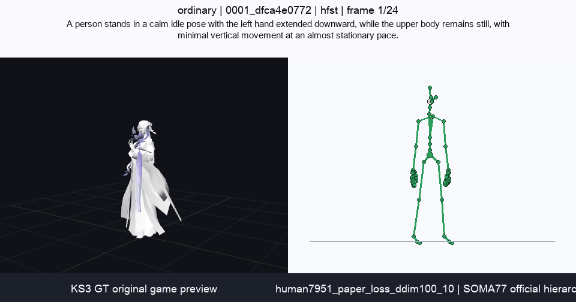
另一部分样本中，Prompt 本身基本正确，但模型仍然没有充分学到对应 Motion。
这一类问题主要出现在：
跳跃；
浮空；
大幅 Root 位移；
下半身动态较强的动作。
典型现象仍然是动作幅度被压缩，或者模型倾向于保持较强的站立和足底接触状态。
[💡]
一个人一动不动地躺在地面上，一条腿弯曲，一只手臂蜷曲搭在躯干上方，身体几乎没有上下移动，整体动作节奏接近静止。
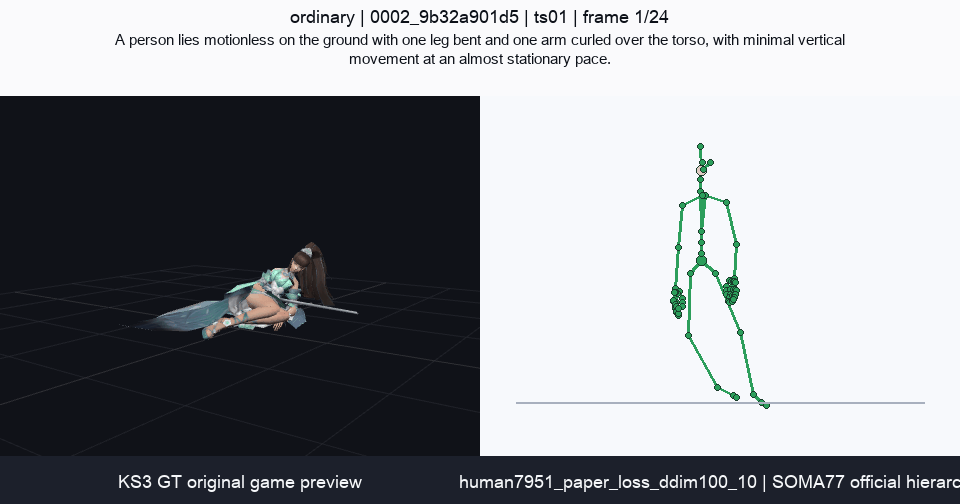
同时也能观察到一部分动作已经能够较好地完成 Prompt 中的主要语义和动作过程，例如攻击、原地动作以及部分击倒类动作。
这说明 Structured Motion Loss 本身是有效的，模型也具备学习游戏动作的能力；但效果仍然高度依赖训练样本和 Prompt 的质量。
[💡]
一个人从低位蹲姿起身至站立，同时双臂向外展开，随后恢复到平静的待机站姿，身体仅有轻微的上下移动，整体动作节奏接近静止。
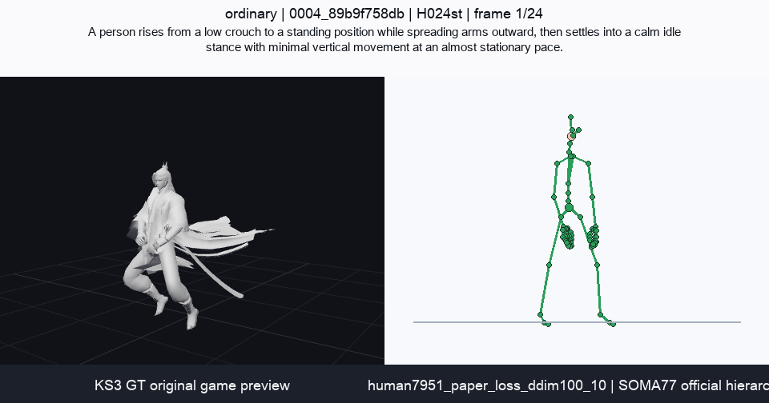
[💡]
一个人以中等速度向前跑动，躯干略微前倾，身体随着每一步轻微摆动，整体上下起伏较小。
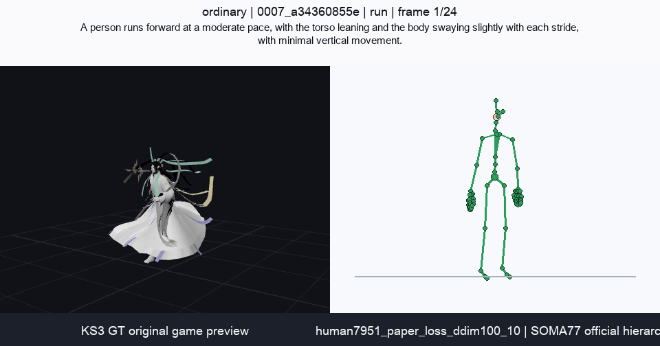
[💡]
一个人站立并向前倾，随后上半身猛地向后仰，同时双臂向两侧大幅展开，动作速度中等，整体上下移动幅度较小。
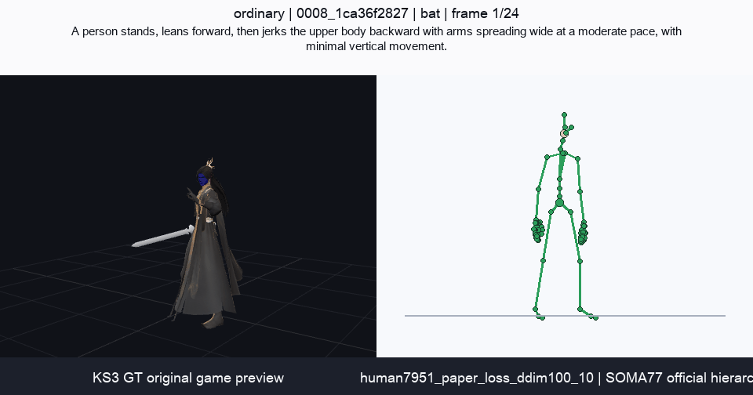
在 Stage 1 基础上，我们进一步尝试 Kimodo 的 Stage 2 训练。
Stage 2 不再只有文本条件，而是在训练过程中同时加入稀疏 Full-body Keyframe Constraints。
训练数据中混合两种任务：
Text-to-Motion；
Text + Sparse Full-body Keyframe Constraints。
其中稀疏 Keyframe Constraint 直接从 GT Motion 中自动采样，不需要额外进行逐帧人工标注。
这样做的目的，是希望模型在保留文本生成能力的同时，通过少量关键帧约束更准确地学习：
Root 轨迹；
身体关键姿态；
动作阶段；
强动态动作中的空间变化。
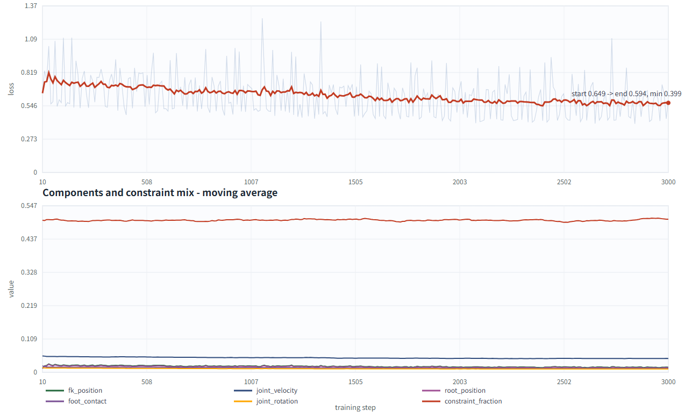
[💡]
一个人先蹲下蓄力，随后垂直向上跃起，身体有中等幅度的上升和下降，最后以屈膝姿势平稳落地。整个动作节奏非常快。
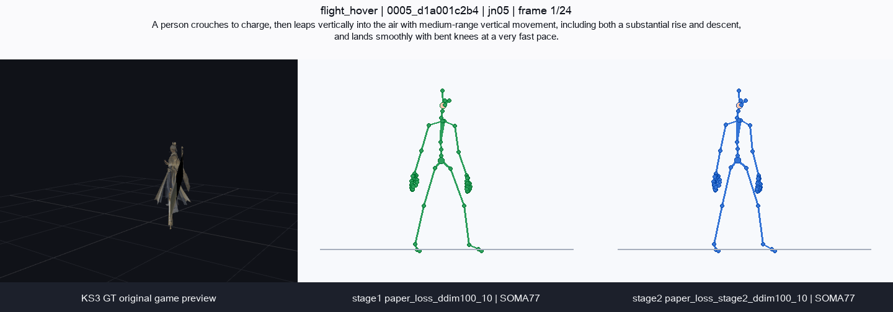
[💡]
一个人站立并向前倾，随后上半身猛地向后仰，同时双臂向两侧大幅展开，动作速度中等，整体上下移动幅度较小。
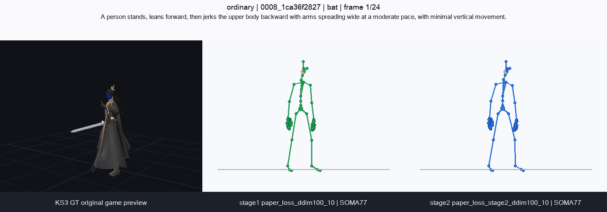
实际对比后发现，Stage 2 可以正常完成训练和推理，但在当前游戏数据上，相较 Stage 1 并没有出现非常明显、稳定的视觉提升。
也就是说，仅仅增加 Sparse Keyframe Constraint，并没有直接解决当前最主要的问题。
通过 Stage 1 和 Stage 2 的可视化检查，我们最终把问题进一步收敛到了两个方向。
逐条检查训练数据后发现，第一版 AI 自动转换 Prompt 中存在不少：
动作信息缺失；
动作顺序错误；
左右方向错误；
起始 / 结束状态不完整；
对复杂动作过度简化；
等问题。
这种情况下，即使训练方式本身没有问题，模型也很难从错误文本中学习正确 Motion。
因此下一步不再继续单纯扩大自动生成数据规模，而是转向：
构建人工审核的高质量 Gold Motion-Prompt 数据。
另一个比较明显的现象是，原始 Kimodo 更偏向普通人体动作和稳定站立状态，而游戏数据中存在大量：
Jump；
Hover；
击飞；
倒地；
大幅 Root 位移；
等强动态动作。
尤其是原有 Structured Motion Loss 中包含 Foot Contact 约束，而对于跳跃、浮空这类动作，长时间离地本身就是正确状态。因此原始训练目标和游戏动作分布之间可能存在一定冲突，模型容易保留较强的“脚接触地面”先验。
这一现象也与前面反复出现的“脚钉地”问题一致。
因此后续除了提高 Prompt 质量外，我们还进一步按照动作类别进行拆分和分析，并尝试：
针对 Attack、Jump、Hover、Knocked Down 等不同类别进行分类微调和条件建模。
这里的目标不是简单增加一个 Category 标签，而是先判断：
不同游戏动作类别的失败原因是否相同，以及是否需要采用不同的训练重点。
A person drives the upper body and arms in a forceful upward slashing motion from behind while leaning slightly forward, then returns to a balanced combat stance with minimal vertical movement at an almost stationary pace.
一个人身体微微前倾，同时带动上半身和双臂从身后用力向上挥砍，随后恢复到平衡的战斗站姿。整体上下移动幅度很小，动作节奏接近静止。
A person crouches low then leaps upward into a graceful midair flip, dominated by upward travel with low-range vertical movement, and lands softly with bent knees returning to a crouched ready position at a slow pace.
一个人先低身蹲下，随后向上跃起，在空中完成一次流畅的翻转。整个动作以上升移动为主，垂直位移幅度较小，最后屈膝轻柔落地，并回到低位蹲姿的准备状态，整体动作节奏较慢。
通过失败案例复查，我们发现 AI 自动转换的 Prompt 存在以下典型问题：
只保留动作类别名称，缺少身体部位、方向和幅度；
忽略动作的起始姿态和结束姿态；
多动作样本中的动作顺序被遗漏或改写；
将模型推测的原因、情绪或意图写入 Prompt，但这些内容无法从动画中观察；
同类动作的描述风格和粒度不统一，导致监督信号不稳定。
例如，一段完整动作可能包括：
站立 → 重心下沉 → 起跳 → 空中停留 → 落地 → 恢复站立。
但自动 Prompt 可能只写成“角色做了一个跳跃动作”。这样的描述虽然类别没有错，却完全丢失了模型需要学习的离地过程、空中状态和落地阶段。
游戏动作数据中存在大量三个动作阶段以上的连续切换。如果 Prompt 只保留一个类别词，即使模型完全拟合文本，也未必能生成正确的完整动作。因此，我们把项目重点从“继续扩大自动标注数据规模”转向“先构建一批动作与文本高度一致的 Gold 数据”。
在正式制定 Prompt 标签标准前，我们先验证文本表示是否能够感知动作顺序变化。
预实验使用 LLM2Vec 比较原始顺序、全局倒序、大幅调整阶段顺序和局部步骤交换后的文本表示。结果表明，LLM2Vec 能够识别全局倒序和较大的动作顺序变化，但对长序列中的局部顺序交换不够敏感，严格判定通过率即正确顺序胜过所有乱序比例为 52.03%。
| 变体 | 平均 cosine |
|---|---|
SWAP_LAST：交换最后两个 Event |
0.99351 |
PARAPHRASE：保持正确顺序，仅替换时间连接词 |
0.99253 |
SWAP_FIRST：交换前两个 Event |
0.97661 |
ROTATE_LEFT：将第一个 Event 移到末尾 |
0.96615 |
RANDOM_SHUFFLE：固定随机种子的随机乱序 |
0.96162 |
REVERSE：完全倒序 |
0.95130 |
| 指标 | 结果 |
|---|---|
| 正确顺序改写平均 cosine | 0.99253 |
| 去除连接词平均 cosine | 0.98793 |
order_margin_mean 平均值 |
0.02433 |
order_margin_hardest 平均值 |
0.00438 |
order_margin_hardest 中位数 |
0.00041 |
| 正确顺序胜过所有乱序比例 | 52.03% |
order_margin_mean：cos(GOLD, PARAPHRASE) − 所有错误顺序 cosine 的平均值，用于衡量正确顺序相对于错误顺序的平均优势。
order_margin_hardest：cos(GOLD, PARAPHRASE) − 最相似错误顺序的 cosine，用于衡量模型面对最难负样本时是否仍能识别正确顺序。
文本编码能够感知明显的全局顺序变化，因此在 Prompt 中保留动作阶段是有价值的；但其对细粒度局部顺序的识别仍有限，不能假设仅靠文本编码就能完整解决复杂时序建模问题。
这一结论直接影响了人工标签标准：Prompt 必须使用“开始、随后、接着、最后”等表达显式描述动作阶段，同时后续评测还需要单独检查动作时序，而不能只依赖整体文本相似度。
为了提高标注效率并保证标注结果可以直接进入训练流程，我们搭建了人工标注平台。平台支持动画逐帧或循环预览、原始名称与 AI Prompt 对照、人工 Prompt 编辑、动作类别选择、异常样本标记、标注保存、复查、去重和导出。
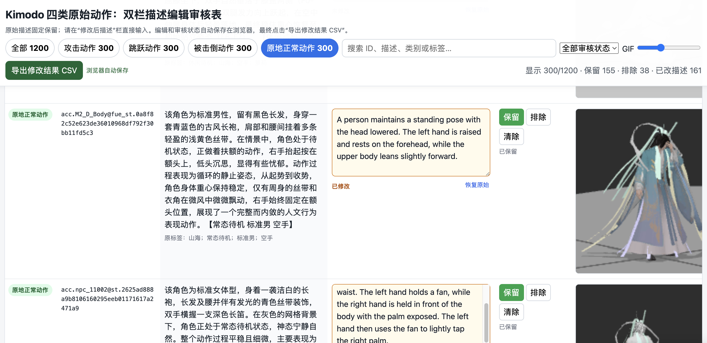
这个平台的意义不只是提高录入效率，而是建立一条可追溯的数据质量链路。每条进入 Gold 集的数据都能够追溯到原始动画、人工 Prompt、动作类别和异常处理结果。
在预实验和失败案例分析的基础上，我们制定了 Kimodo Prompt 标签转换标准：
明确写出动作的起始姿态；
按真实时间顺序描述动作，不随意重排阶段；
写清主要身体部位、运动方向和动作幅度；
对离地、落地、浮空、倒地等关键状态进行显式描述；
写明结束姿态，或者说明动作是否持续；
不加入动画中不可直接观察的情绪、原因和意图；
多动作切换不能压缩成单一动作类别；
同类动作尽量使用统一术语和相近描述粒度。
中文模板：
角色从[初始姿态]开始，[持物手和道具]。[准备动作]后，[主要动作]，身体向[方向/旋转方式]移动。[结束动作或最终姿态]。例如，对于被击倒动作，Prompt 应描述受击后的身体后仰、失衡、倒地和最终姿态，而不是只写“角色被击倒”；对于浮空动作，则应明确区分“从地面进入浮空”“持续浮空”和“从浮空回到地面”。
我们选取了 1,200 条候选样本进行人工处理。经过重复样本清理后剩余 842 条，再排除骨架异常和转换失败样本，最终得到 748 条成功转换的 Gold 数据。
具体类别分布如下：
| 类别 | 数量 |
|---|---|
| 攻击 | 140 |
| 跳跃 | 44 |
| 浮空 | 154 |
| 被击倒 | 243 |
| 原地正常动作 | 167 |
| 合计 | 748 |
这批数据覆盖了当前最关注的游戏动作类型，但也存在明显的类别不均衡。其中“被击倒”有 243 条，“跳跃”只有 44 条。因此，748 条 Gold 数据适合验证模型是否具备领域学习能力，但还不足以代表完整业务分布，也不能直接视为最终生产训练集。
为什么先做过拟合实验
Gold 数据完成后，我们没有立即追求测试集最优结果，而是先进行故意过拟合训练。
这样做是因为，在训练代码自主恢复、数据量较小、标签刚完成的情况下，如果模型连训练样本都无法复现，就无法判断问题究竟来自模型训练实现、90×369 动作特征、Prompt 一致性、Structured Motion Loss、推理后处理还是模型表达能力。
因此，过拟合实验相当于训练链路的单元测试。
实验表明，高质量 Gold 数据可以被模型学习。攻击、击倒、跳跃等动作在训练样本上的表现明显改善，“脚钉地”也不再是所有样本上的绝对现象，部分离地和浮空动作能够被正确生成。
这个结果证明：Kimodo 并非结构上无法生成游戏动作；前期 7,951 条数据实验的瓶颈至少部分来自 Prompt 质量和数据一致性；Gold 数据与当前训练代码已经形成有效的学习闭环。
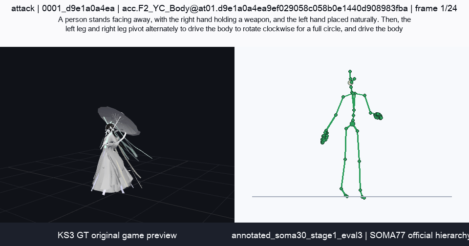
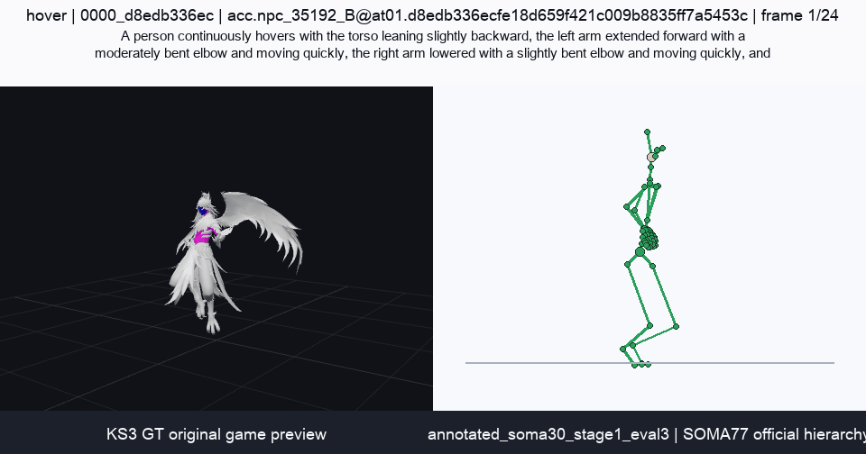
| 模型 | 数据集 | RTE ↓ | RTE-XZ ↓ | RTE-Y ↓ | BPE ↓ | BPE-Upper ↓ | BPE-Lower ↓ | Contact ↑ | Foot Skate Ratio ↓ | Foot Skate Height ↓ |
|---|---|---|---|---|---|---|---|---|---|---|
| 原始Kimodo模型 | 748-games | 0.551939 | 0.345670 | 0.306518 | 0.499431 | 0.509166 | 0.434206 | 0.957314 | 0.095524 | 0.110196 |
| 过拟合模型 | 748-games | 0.130128 | 0.058020 | 0.094977 | 0.115420 | 0.118436 | 0.095209 | 0.906332 | 0.466643 | 1.997528 |
完成可学习性验证后，我们将 748 条数据按照类别分层划分为：
训练集：598 条；
验证集：75 条；
测试集：75 条。
正式 Gold 数据训练使用的配置为（更多见附件记录）：
| 配置项 | 设置 |
|---|---|
| 初始化权重 | nvidia/Kimodo-SOMA-RP-v1.1 |
| 微调方式 | 全参数 denoiser 微调 |
| 训练阶段 | 单阶段 Stage 1 |
| Loss | Structured Motion Loss，masked Smooth L1，β=0.1 |
| Learning rate | 5e-5 |
| Steps | 3,000 |
| Batch size | 256 |
| Warmup | 50 |
测试集表现：
攻击效果
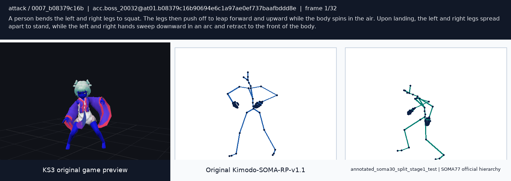
飞行效果：
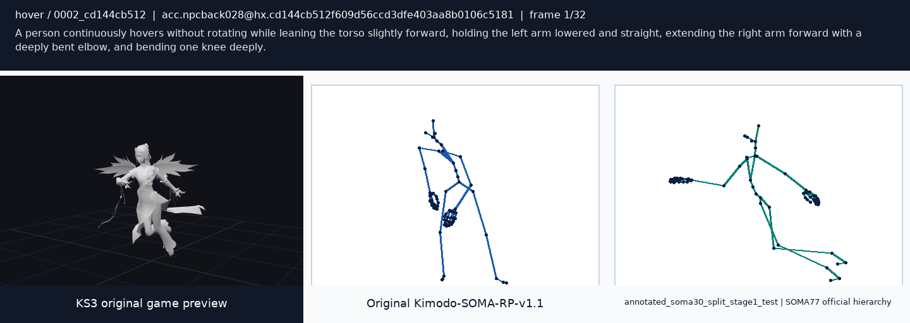
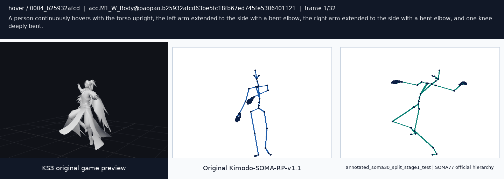
跳跃效果：
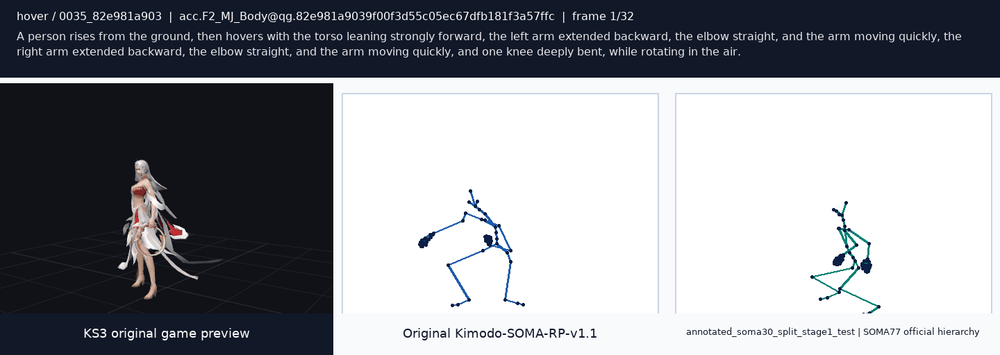
站立效果：
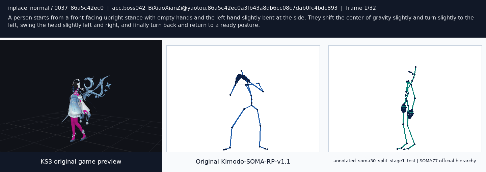
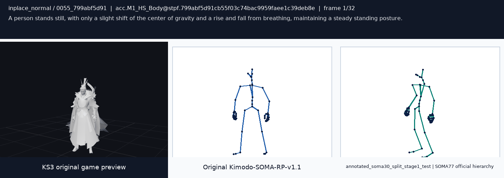
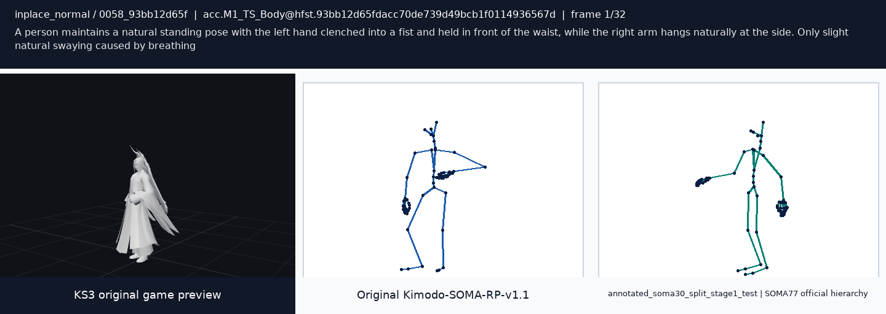
击倒：
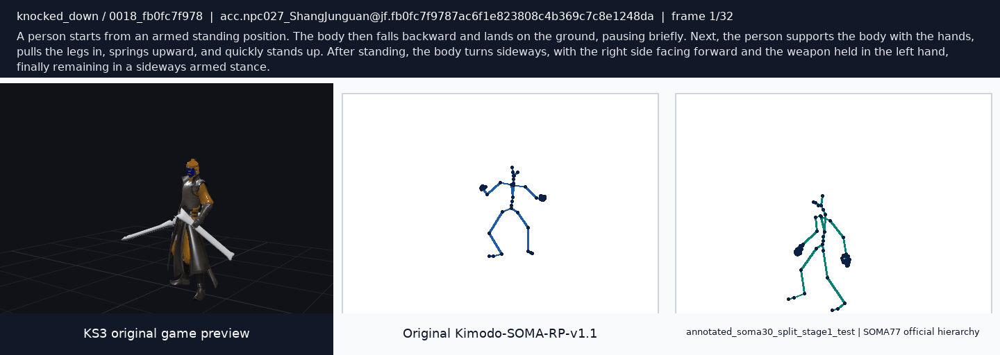
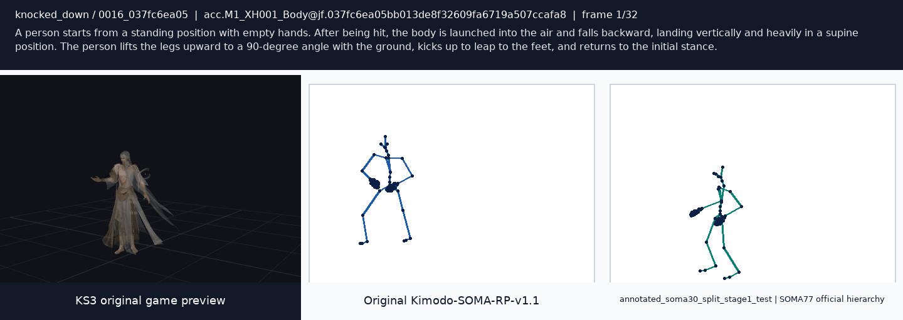
混合训练在游戏动作数据中加入部分 SEED 原始样本，相当于在学习新领域时回放旧分布，目标是减轻灾难性遗忘。我们从seed的二十个小类中，每个小类随机抽取四十个样本（martial art 20个），跟我们标注的数据集进行混合，大约是1：1的比例，得到的训练效果不错。
可视化分析
在我们标注的游戏数据集上，混合训练的结果跟不混和训练的结果基本一致，跟Original GT也基本一致
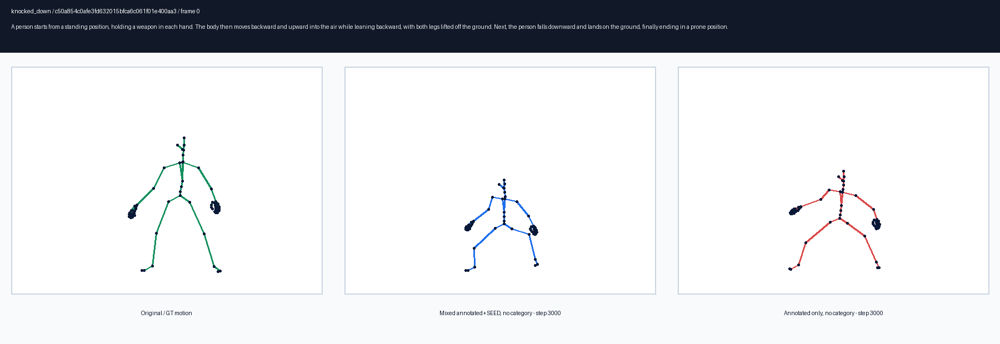
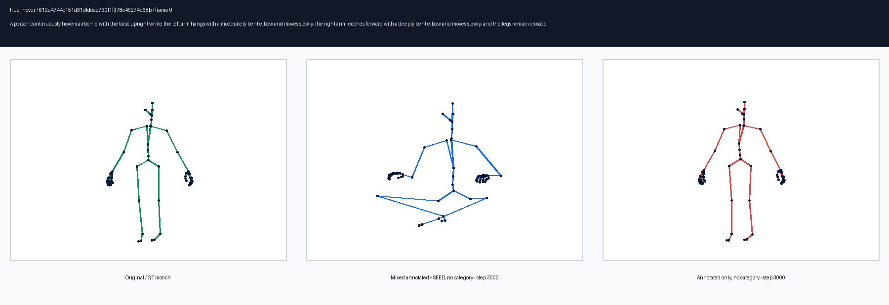
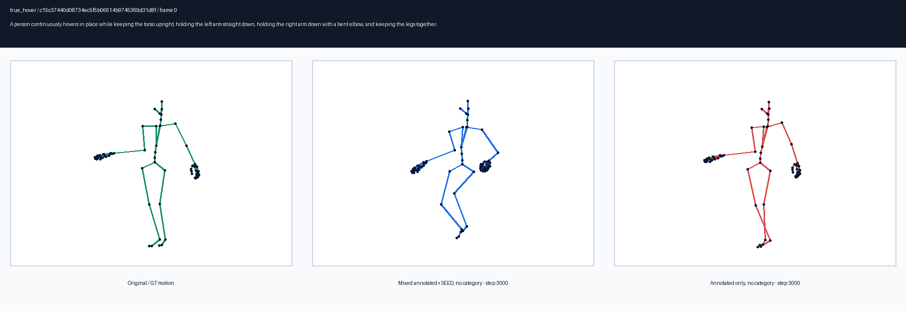
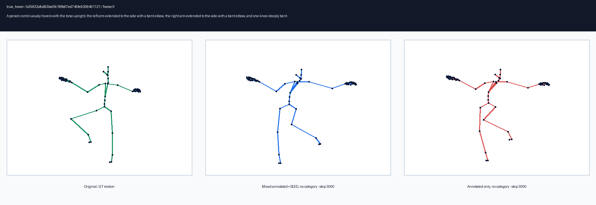
Kimodo 原始指标主要评价通用文本与动作的语义匹配，不能完整回答游戏动作是否正确完成离地、浮空、落地、击倒和连续阶段切换。因此，我们在保留原始评测的基础上，将结果划分为三个维度。
三维评测分别回答三个不同问题：
| 评测维度 | 回答的问题 |
|---|---|
| RTE、BPE | 目标游戏动作有没有学会？ |
| Unseen Prompt | 模型是在记忆训练文本，还是具备一定泛化能力？ |
| SEED 保持评测 | 游戏域增强是否以破坏原始能力为代价？ |
RTE（Root Trajectory Error，根节点轨迹误差）用于评价角色整体运动轨迹是否与 Game GT 一致。它逐帧计算生成动作与 GT 根节点位置的欧氏距离，并在全部帧上取平均：
$RTE=\frac{1}{T}{{\sum_{t=1}^{T}{\left |{{{\hat{p}}_{t}}-{{p}_{t}}}\right |}}_{2}}$
其中，RTE-XZ 表示水平面轨迹误差，反映角色前后、左右移动是否正确；RTE-Y 表示垂直方向误差，重点反映跳跃、浮空和下落高度是否准确。
BPE（Body Pose Error，身体姿态误差）用于评价身体各关节的相对姿态是否正确。计算前，分别消除生成动作和 GT 的根节点位置与整体朝向，再计算对应关节的平均位置误差：
$BPE=\frac{1}{TJ}{{\sum_{t=1}^{T}{\sum_{j=1}^{J}{\left |{\hat{q}t,j-qt,j}\right |}}}_{2}}$
BPE-Upper 表示上半身姿态误差，主要反映攻击、挥臂和躯干动作；BPE-Lower 表示下半身姿态误差，主要反映腿部、脚部和落地姿态。
| 指标 | 主要回答的问题 | 单位 | 方向 |
|---|---|---|---|
| RTE | 角色整体是否移动到正确位置 | 米 | 越低越好 |
| RTE-XZ | 水平移动轨迹是否正确 | 米 | 越低越好 |
| RTE-Y | 跳跃、浮空高度是否正确 | 米 | 越低越好 |
| BPE | 身体整体姿态是否正确 | 米 | 越低越好 |
| BPE-Upper | 上半身动作是否正确 | 米 | 越低越好 |
| BPE-Lower | 下半身动作是否正确 | 米 | 越低越好 |
结果可以组合理解：
RTE 低、BPE 高：移动轨迹正确，但身体姿态不准确。
RTE 高、BPE 低：局部姿态接近 GT，但整体位置或移动方向错误。
RTE 与 BPE 都低：整体轨迹和身体姿态均较好。
当前脚本按 motion_id 精确配对并逐帧比较，取生成动作和 GT 的公共帧长，不使用 DTW。脚本目前没有内置“合格/不合格”阈值，只统计均值和中位数；正式阈值需要根据 RP 基线、GT 自一致误差或验证集分布另行确定。
| 模型 | RTE ↓ | RTE-XZ ↓ | RTE-Y ↓ | BPE ↓ | BPE-Upper ↓ | BPE-Lower ↓ | Contact ↑ | Foot Skate Ratio ↓ | Foot Skate Height ↓ |
|---|---|---|---|---|---|---|---|---|---|
| Kimodo 原始模型 | 0.599287 | 0.474419 | 0.233563 | 0.394007 | 0.418150 | 0.232254 | 0.967434 | 0.126444 | 0.141272 |
| 游戏全量数据微调模型 | 0.254880 | 0.226311 | 0.053175 | 0.179023 | 0.193499 | 0.082033 | 0.074873 | 0.126143 | 0.164242 |
| 模型 | RTE ↓ | RTE-XZ ↓ | RTE-Y ↓ | BPE ↓ | BPE-Upper ↓ | BPE-Lower ↓ | Contact ↑ | Foot Skate Ratio ↓ | Foot Skate Height ↓ |
|---|---|---|---|---|---|---|---|---|---|
| Kimodo 原始模型 | 0.585655 | 0.333570 | 0.350617 | 0.493341 | 0.504325 | 0.419748 | 0.955791 | 0.137798 | 0.130193 |
| Gold 数据微调模型 | 0.315964 | 0.143359 | 0.222094 | 0.324660 | 0.336493 | 0.245382 | 0.911493 | 0.452807 | 1.616363 |
| 模型 | RTE ↓ | RTE-XZ ↓ | RTE-Y ↓ | BPE ↓ | BPE-Upper ↓ | BPE-Lower ↓ | Contact ↑ | Foot Skate Ratio ↓ | Foot Skate Height ↓ |
|---|---|---|---|---|---|---|---|---|---|
| Kimodo 原始模型 | 0.585655 | 0.333570 | 0.350617 | 0.493341 | 0.504325 | 0.419748 | 0.955791 | 0.137798 | 0.130193 |
| Gold 数据微调模型 | 0.315964 | 0.143359 | 0.222094 | 0.324660 | 0.336493 | 0.245382 | 0.911493 | 0.452807 | 1.616363 |
| 混合训练 + Plaintext | 0.340868 | 0.149795 | 0.244208 | 0.322132 | 0.331806 | 0.257315 | 0.932267 | 0.456818 | 2.158598 |
从现有结果看，Gold 模型在游戏域 RTE、BPE 和动作可视化上均明显优于原始模型，说明高质量数据能够有效增强目标领域能力。
可以，这一节保留 Unseen Prompt 的测试目的、5 类案例、量化结果和后续判断 就够了，RTE/BPE 前面已经介绍过，这里直接拿来做辅助分析。
为了判断模型是否只是记住训练文本，我们额外构造了一组训练集中没有出现过的 Prompt，覆盖 Inplace Normal、Knocked Down、Attack、Jump 和 Hover，观察模型在新的动作描述下能否保持正确的动作类别和主要运动过程。
目前不同类别的表现差异比较明显。
Prompt 描述角色从自然站立开始，低头、双手抬起遮住面部，随后再恢复站立。
模型能够较完整地生成站立 → 抬手捂脸 → 恢复站立的主要过程，说明普通原地动作已经具备较稳定的 Unseen Prompt 泛化。
角色原地站立，双脚与肩同宽，身体保持放松。随后头部微微低下，双肩向前收拢，双手抬向面部。双掌覆盖住眼睛和脸颊，双肘自然朝下，同时保持站立姿势，上半身伴有轻微的颤动。最后，双手缓慢从面部放下，角色重新恢复安静、直立的站姿。
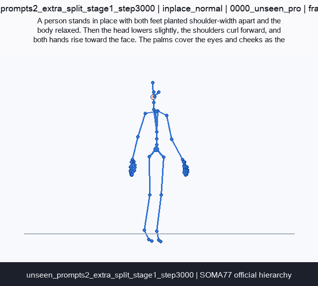
Prompt 包含防御站立 → 受击后仰 → 失衡 → 倒地 → 躺地等连续阶段。
模型能够生成比较完整的受击和倒地过程，说明对于 Knocked Down 这类带 Root 位移和状态切换的动作，也已经出现较明显的泛化能力。
角色开始时保持防御站姿，双膝弯曲，双臂抬起。随后躯干突然向后猛震，仿佛胸口受到强力击打，双臂向外甩开，双脚失去平衡。身体向侧方倒下，髋部随之旋转，最终背部和肩部撞击地面。落地后，双腿轻微滑动，一只手臂落在身体上方，角色继续躺在地面，仅伴有轻微的缓冲和稳定动作。
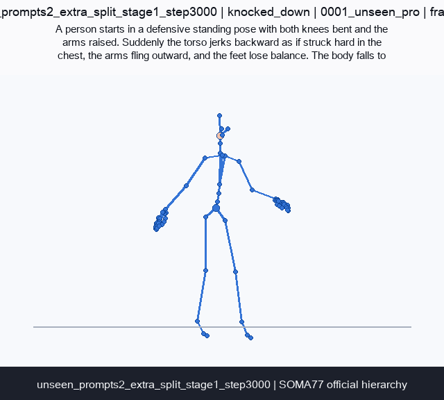
Prompt 包含转体、蓄力、交叉迈步、旋转攻击和恢复站姿等多个阶段。
模型已经能够生成主要攻击动作，并表现出一定的转体和蓄力过程，但下半身动作和完整旋转仍不够准确。
角色从一个防御姿态开始，双膝微微弯曲，右手放在腰部附近。随后身体迅速向左扭转，同时右臂向后蓄力，左脚交叉迈步，身体重心下沉。接着，角色快速向前发起旋转攻击，右臂大幅度挥动划过一道弧线，左臂则配合伸展以维持身体平衡。最后，双脚稳稳落地，躯干回正，双臂恢复到稳定的准备姿态。
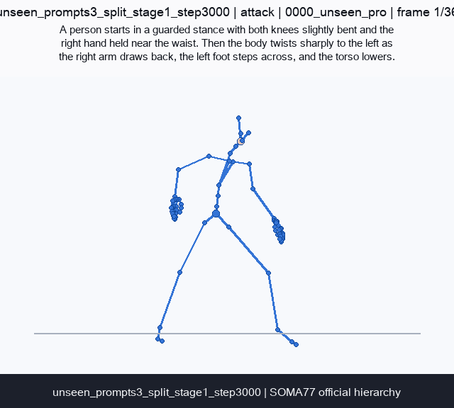
Prompt 描述角色从站立开始，通过屈膝和身体后倾进入浮空，短暂悬停后重新落地。
当前模型已经能够生成明显的离地和悬浮行为，说明已经学到 Hover 的基本运动模式，但浮空高度和垂直轨迹仍不稳定。
角色开始时保持站立，双臂略微张开，与身体保持一定距离。随后双膝弯曲，躯干向后倾斜，仿佛受到一股向上的力量推动。接着，双脚离开地面，身体在原地悬浮，同时肩部缓慢旋转，双臂向外展开以维持平衡。在短暂悬停后，双腿向下伸展，双脚轻柔接触地面，身体通过缓冲动作逐渐恢复到稳定的站立姿态。
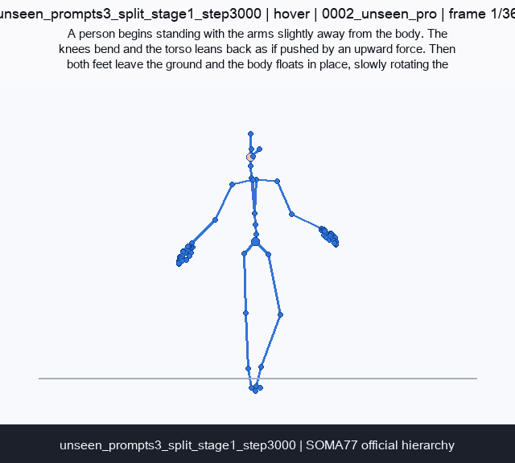
Prompt 包含下蹲蓄力 → 起跳 → 腾空 → 前空翻 → 展体 → 落地等多个连续阶段。
这一类动作目前仍没有稳定学到，主要表现为起跳高度不足、腾空和翻转过程不完整、下半身姿态和落地动作不准确。
角色直立站立，双臂自然放松。随后双膝大幅弯曲，双臂向后摆动以积蓄动量。接着，双腿用力蹬地，使身体向上腾空，同时完成一个紧凑的前空翻，双臂收拢靠近胸前。之后，角色逐渐展开身体，双腿向地面伸展，以屈膝姿态落地，并最终恢复到平衡稳定的站立姿势。
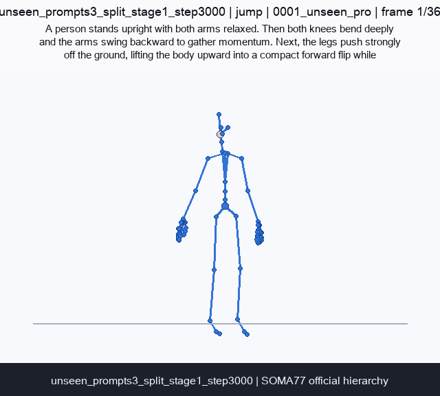
| 类别 | 当前表现 | 主要问题 |
|---|---|---|
| Inplace Normal | 较稳定 | 基本能够泛化 |
| Knocked Down | 较好 | 倒地细节仍可优化 |
| Attack | 有一定泛化 | 下半身动作不足 |
| Hover | 能够离地 | 垂直 Root 轨迹不稳定 |
| Jump | 仍未稳定学到 | Root-Y + 下半身姿态 |
结合 RTE / BPE 的分类结果，可以进一步看到：
| 类别 | RTE | RTE-Y | BPE | BPE-Lower |
|---|---|---|---|---|
| Attack | 0.2891 | 0.1418 | 0.5026 | 0.5936 |
| Hover | 0.6029 | 0.5778 | 0.3007 | 0.3415 |
| Inplace Normal | 0.0752 | 0.0383 | 0.1943 | 0.2314 |
| Jump | 0.3322 | 0.2846 | 0.4329 | 0.6481 |
| Knocked Down | 0.3089 | 0.1823 | 0.3356 | 0.3960 |
结果和可视化基本一致：
模型已经能够较好处理普通原地动作，并在 Knocked Down、Attack、Hover 上出现一定 Unseen Prompt 泛化；当前最明显的瓶颈仍然集中在 Hover / Jump 的垂直 Root 轨迹，以及 Attack / Jump 的下半身动态。
第三维度用于判断游戏域增强是否破坏原始能力。我们使用 SEED 测试集作为保持集，比较原始模型与微调模型的 R@1、R@5、T2M Similarity 等指标，同时关注 Foot Skate Ratio 和 Height 等动作质量变化。
最终结果显示，Gold 模型虽然在游戏域表现明显改善，但在 SEED 保持集上的 R@1、R@5 和 T2M Similarity 明显下降。这说明模型发生了灾难性遗忘，目前尚未达到“增强游戏能力且其它能力不掉”的最终目标。
| 模型 | R@1 ↑ | R@5 ↑ | T2M Sim ↑ | Contact ↑ | Foot Skate Ratio ↓ | Foot Skate Height ↓ |
|---|---|---|---|---|---|---|
| Kimodo 原始模型 | 97.4491% | 99.2019% | 0.927029 | 0.983554 | 0.105419 | 0.197719 m/s |
| Gold 游戏数据微调模型 | 38.8628% | 50.9762% | 0.600805 | 0.901491 | 0.128725 | 0.118240 m/s |
| 混合数据微调模型 | 95.3256% | 97.5061% | 0.899417 | 0.911449 | 0.181151 | 0.222303 m/s |
| 模型 | R@1 ↑ | R@5 ↑ | T2M Sim ↑ | Contact ↑ | Foot Skate Ratio ↓ | Foot Skate Height ↓ |
|---|---|---|---|---|---|---|
| Kimodo 原始模型 | 85.7143% | 95.8624% | 0.937635 | 0.982887 | 0.092619 | 0.142594 m/s |
| Gold 游戏数据微调模型 | 18.8444% | 33.2462% | 0.604258 | 0.913408 | 0.123278 | 0.122588 m/s |
| 混合数据微调模型 | 79.5441% | 93.0604% | 0.914383 | 0.924000 | 0.167662 | 0.183138 m/s |
3.2.1 Seed Ground Truth（左） vs Kimodo RP（中） vs 游戏数据微调模型（右）
在我们标注的数据集上训练过后，模型丧失了原本在seed数据集上的表现
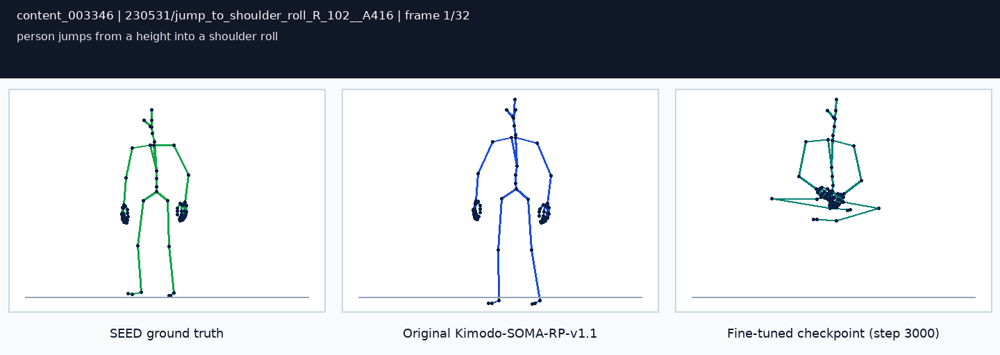
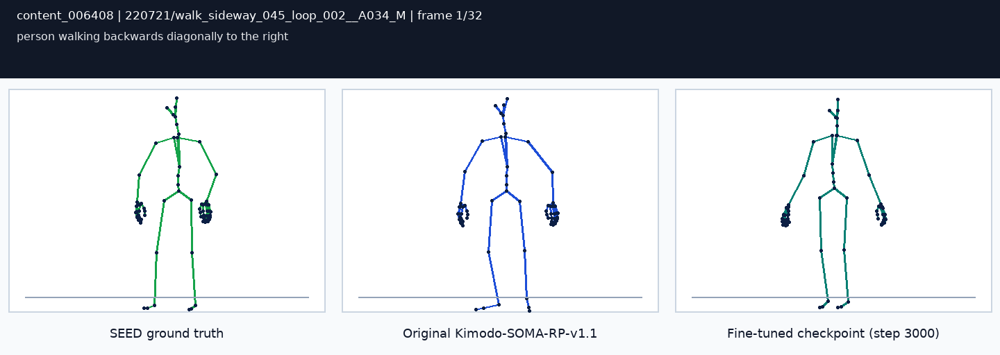
3.2.2 Seed Ground Truth（左） vs 混合训练模型（中） vs 游戏数据微调模型（右）
运用混合数据训练之后，混合训练模型明显更加贴近seed ground truth，表现远好于只有游戏数据微调的模型
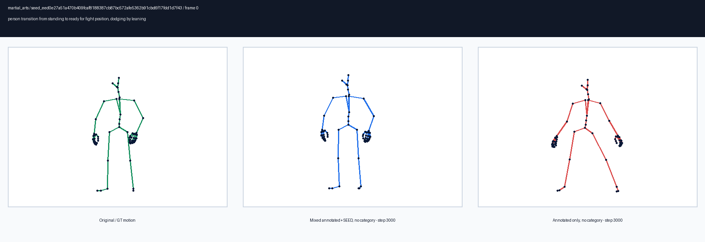
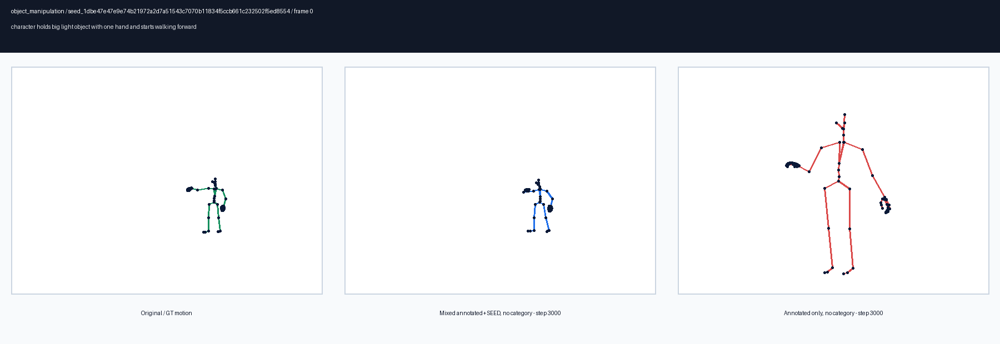
为了避免成果只停留在训练日志和离线动作文件层面，我们完成了 Blender 插件原型，将算法结果转换为动作人员可以直接理解和检查的形式。
插件目前支持以下核心链路：
在 Blender 中输入或选择动作 Prompt；
选择原始模型或指定微调权重；
调用 Kimodo 推理流程生成动作；
将生成结果导入或绑定到 Blender 角色；
直接播放并观察动作；
对原始模型和微调模型进行 A/B 对比。
Blender 插件证明模型结果已经能够进入真实动作编辑环境，也降低了算法人员与动作美术沟通的门槛。当前插件尚不是完整生产工具，但已经覆盖从 Prompt 到动作预览的核心闭环，并为后续接入游戏动作制作流程提供了接口原型。
结合定量结果和动作可视化，本项目已经验证以下结论：
Kimodo-SOMA-RP-v1.1 可以基于开源权重进行后训练。 数据处理、训练、推理、评测和 Blender 可视化链路已经打通，形成了完整的游戏动作域适配原型。
Kimodo 具备学习游戏动作域的能力。 高质量 Gold 数据训练后，游戏动作的 Root 轨迹和身体姿态误差明显下降，Attack、Knocked Down、Hover 等类别均表现出明显改善；但 Jump、Hover 的垂直轨迹和部分下半身动态仍是当前主要瓶颈。
Prompt 与 Motion 的对齐质量是影响领域学习效果的关键因素。 7,951 条自动标注数据虽然规模更大，但训练效果不稳定；转向 748 条人工审核 Gold 数据后，模型能够更有效地学习目标动作。现有实验说明，相比继续扩大低质量数据规模，优先提高监督数据的一致性更有效。
模型已经具备一定的 Unseen Prompt 泛化能力。 Inplace Normal、Knocked Down、Attack 和 Hover 在未见描述上能够保持主要动作类别和部分时序结构，但 Jump 和复杂多阶段动作仍不稳定，说明模型并非只是在记忆训练文本，但细粒度时序建模能力仍有限。
单域全参数微调会造成明显的原始能力遗忘，但混合训练可以大幅缓解这一问题。 Gold-only 模型在 SEED Content 和 Repetition 上的语义指标大幅下降；加入 SEED 原始数据进行混合训练后，SEED Content R@1 从 38.86% 恢复到 95.33%，Repetition R@1 从 18.84% 恢复到 79.54%，同时游戏域效果仍基本保持。说明“游戏域增强与原始语义能力保持”并非不可兼得。
本项目完成了可复现的 Kimodo 游戏动作后训练原型，验证了游戏动作域的可学习性，并通过 Gold 数据、Unseen Prompt、RTE/BPE 与 SEED 保持评测建立了完整的验证闭环。进一步的混合训练实验表明，单域微调造成的原始能力遗忘可以被显著缓解。当前主要问题已经从“模型能不能学会游戏动作、会不会严重遗忘”收敛为“如何在保持游戏域能力和 SEED 语义能力的同时，进一步改善 Jump / Hover、Contact 和 Foot Skate 等运动质量问题”。
本项目中，AI 主要用于辅助技术报告阅读、代码结构梳理、数据处理脚本初稿、实验记录整理、自动 Prompt 候选生成、运行日志归纳和阶段性结果对比。
AI 提高了前期开发效率，但项目中最重要的一次转折也来自对 AI 输出边界的识别：自动 Prompt 在动作类别层面可能基本正确，却容易遗漏时序、幅度、起止状态、身体部位和根节点位移。直接把这些内容作为训练真值，会将生成错误转化为模型监督噪声。
因此，本项目对 AI Native 的理解不是“将任务全部交给大模型”，而是：
让 AI 承担高频、可验证、可批量的工作，把人工投入集中在标签标准、动作核验、异常判断、证据评审和关键技术决策上。
AI 生成的 Prompt 被定位为人工标注候选，而不再被默认视为 Gold 标签；AI 生成的代码也需要经过实际运行和代码审查，实验结论则必须通过训练日志、量化指标、动作可视化和复现实验进行验证。
对于训练失败、动作异常或评测指标冲突的情况，AI 可以协助整理现象、检查代码路径和提出排查方向，但不能仅根据训练损失下降或少量成功案例直接宣布模型能力得到提升。
随着项目进入数据清洗、人工标注、模型训练、能力保持、推理评测、可视化和工具开发等并行阶段，仅依赖聊天记录和个人记忆、仓库已经难以完整表达项目当前状态。为此，项目中期开发并引入了“项目大脑”和研究规范驱动开发（即R-SDD）方法，用于沉淀现有工作并支持后续协作。
R-SDD将一次研究过程拆分为：
研究问题
→ 实验方案
→ 准备就绪审查
→ 实验执行
→ 原始证据登记
→ 独立证据评审
→ 团队决策
→ 修订、复现、采纳或停止其中，研究问题负责说明“需要回答什么”，实验方案负责说明“如何产生证据”，实验记录负责保存实际代码版本、运行环境、输入输出、指标、产物和方案偏差，证据评审负责区分“实验是否有效”“证据说明什么”和“团队下一步做什么”。
项目设置两个关键人工审查环节（门控）：
实验执行前，由明确的审查人检查研究问题、实验方案、评价标准、负责人、成本和风险，审查通过后冻结实验方案；
实验完成后，由独立评审人员检查原始产物、方案偏差、指标和动作可视化，再决定证据是否有效以及是否采纳、拒绝、修订、复现或停止。
项目大脑不替代原始实验记录，而是根据研究规范、实验方案、实验记录、评审结论和交接信息自动生成当前项目摘要，集中展示：
当前研究和实验处于什么阶段；
每项工作由谁负责；
哪些实验正在运行或等待评审；
当前有哪些风险和阻塞条件；
最近形成了哪些经过评审的结论；
下一位成员可以接手什么工作。
新成员进入项目后，可以通过命令行工具先校验研究记录，再生成面向真人或 AI 的接手数据包。例如：
research validate
research onboard
research onboard --role reviewer
research onboard --json其中，research validate 用于检查研究记录和冻结实验方案的一致性，research onboard 用于向真人展示当前状态、风险和可接任务，结构化输出则可以交给 Codex 等代码智能体读取。这样，新成员不需要恢复完整聊天记录，也不需要依赖某一位成员口头讲解全部上下文。
项目同时使用六类智能体角色进行策略规划、研究负责、实验执行、能力保持、推理评测、证据整理和协作基础设施维护等过程，用于验证任务能否被明确交接。智能体角色可以由任何一名真人接手，也可以由多名成员共同承担；真实贡献以代码提交、训练日志、实验记录、标注记录、评测结果和交付物为准。
一次完成的协作循环如下：
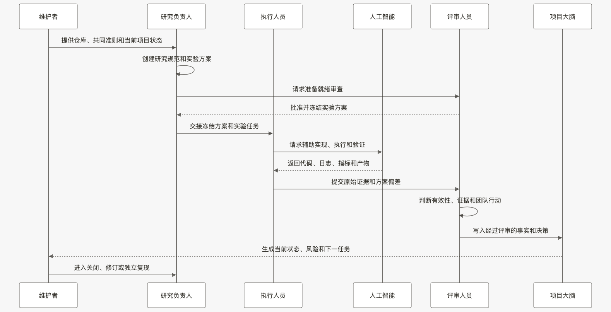
本项目中的智能体角色主要用于协作流程演练，实际成果归属按照真人承担的工作和可追溯材料认定。成员可以同时承担多个角色，同一类工作也可以由多名成员共同完成。
| 成员 | 对应协作角色 | 主要职责 | 可追溯材料 |
|---|---|---|---|
| 邹（队长） | 研究负责人、核心实验负责人、审查组织者 | 负责项目进程把控和任务协调，组织方案审查；承担第一阶段和第二阶段的大部分模型训练、微调、推理、测评和结果分析；参与游戏动作数据清洗与标注 | 代码提交、训练配置、训练日志、模型权重、评测结果、实验记录、审查记录、标注记录 |
| 林 | 项目策略与成果表达 | 提出项目整体策略，梳理阶段目标、结论边界和后续方向，负责结题汇报 HTML 制作与成果表达 | 项目策略文档、汇报 HTML 及修改记录、阶段总结 |
| 齐 | 能力保持与对照实验负责人 | 使用人工标注数据训练模型并验证效果；开展人工标注数据与部分原始数据的混合训练，评估游戏动作能力增强后能否保留模型原有能力；参与游戏动作数据清洗与标注 | 训练脚本、混合数据配置、模型权重、训练日志、保持能力评测结果、实验对比记录、标注记录 |
| 刘 | 模型推理、量化评测与复现流程负责人 | 负责 Kimodo 模型推理与评测流程开发，完成多版本模型的批量推理和量化指标计算，建立标准化评测基线；整理实验文档和可复现流程；参与游戏动作数据清洗与标注 | 推理与批量评测脚本、多版本模型评测结果、量化指标记录、标准化评测基线、实验文档、复现流程说明、数据清洗与标注记录 |
| 赵 | 动作可视化、标注平台与时序语义实验负责人 | 负责游戏动作可视化复现，搭建人工标注平台；开展文本编码器时序语义理解实验，分析实验结果，并沉淀数据处理规范与复现实验文档；参与游戏动作数据清洗与标注 | 动作可视化代码与结果、标注平台代码、时序语义实验记录与分析结果、数据处理规范、复现实验文档、数据清洗与标注记录 |
| 何 | 项目大脑与协作基础设施负责人、业务演示开发者 | 开发和维护项目大脑及研究规范驱动开发工具，建设研究状态校验、新成员接手和证据交接机制；负责 Blender 插件业务线开发；参与游戏动作数据清洗与标注 | 研究协作工具代码、Git 提交和合并请求、命令行工具与设计文档、Blender 插件代码、演示材料、标注记录 |
项目最终以版本控制记录、训练日志、模型权重、数据版本、人工标注记录、评测结果、动作可视化、实验文档和合并请求作为主要贡献证明。AI 生成内容、智能体模拟记录和聊天记录仅作为辅助过程材料，不能单独作为成员贡献或实验结论的依据。
项目已经形成或需要在结题前完成最终整理的资产如下：
| 类别 | 交付内容 | 当前状态 |
|---|---|---|
| 数据 | 7,951 条初筛数据、748 条 Gold 数据及 598/75/75 划分 | 已完成 |
| 数据工具 | 动作筛选、骨架重定向、特征提取、质检与数据划分脚本 | 已完成 |
| 标注工具 | 人工标注平台、Kimodo Prompt 标签转换标准 | 已完成 |
| 训练 | Phase 1/Phase 2 训练代码、配置、超参数和 Checkpoint | 已完成 |
| 评测 | TMR、RTE、BPE、unseen Prompt 和 SEED 保持评测 | 已完成 |
| 演示 | Blender 插件、典型案例和对比视频 | 已完成 |
| 文档 | 环境依赖、数据准备、训练、推理、评测和已知问题说明 | 已完成 |
本项目使用开源模型权重和开源数据时，需要遵守各自的 License 和使用范围。内部游戏动作数据只能在已有授权范围内用于研究和验证，不能将原始动作、Prompt、衍生数据集或训练权重擅自公开。
在数据管理上，需要保存数据来源、筛选规则、版本号和人工标注记录。Gold 数据的任何修改都应产生新版本，避免数据变化后仍使用旧实验结果。
在模型维护上，Checkpoint 必须与训练配置、数据版本和评测报告绑定，不能仅依靠文件名区分模型，也不能用未经验证的新权重覆盖已有结果。
当前管线已经将数据转换、训练、评测和 Blender 展示拆分为独立模块。后续正式游戏动作数据到位后，可以沿用现有数据协议和评测方法，而不需要重新设计整套系统。